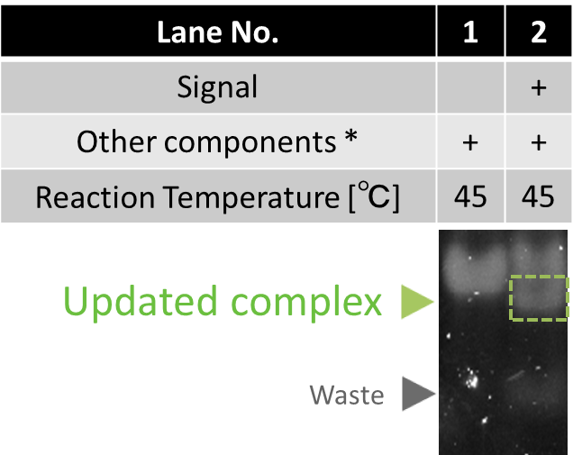

Experiment
Experimental results of electrophoresis and other chemical observation methods proved our devices to work properly as we designed. This page explains the experimental results of Enzymatic device and Enzyme-free device, both of which include detailed analyses of component reactions.
Enzymatic device
Functionality
2-instruction operation
Enzymatic device releases different Outputs in order depending on the information of Input. It was proved by two experimental results of electrophoresis (Fig.1) where we added two types of Inputs (A then B, B then A). Both Output-A and B were tagged with TAMRA, though the length of two Outputs was different. We conducted quantitative analyses of the band intensity of Outputs. Following graphs show the ratio of Outputs to the total intensity of 2 bands (Transducer, Output) on each lane.

Fig.1 Time evolution of Outputs with Input-AB and Input-BA
All enzymes and DNAs (Transducer, Gate) were mixed at 45 ℃ , then the reactions started when Input was added. Reaction times were 0, 1/6, 1/2, 1, 2, 5, 10, 12, 15, 20, 25, 30, 40 min. After the reaction, the solution was heated up to 80 ℃ to stop enzymatic activities, then annealed again. The length of Output-A and Output-B is 20 mer and 25 mer, respectively.
These experimental results proves that our device properly released Outputs in order. The order of Outputs was controlled by the Input sequence. Both graphs show that saturated time of the first and the second Output was 2 and 20 minutes, respectively. More than 90 % of Outputs were released from Transducer.
Detailed experimental conditions are given in Materials and Methods
3-instruction operation
In this experiment, we confirmed that our device properly releases 3 Outputs properly by Input coding "A then B then C"
.
All Outputs have a different lengths and modified with TAMRA. Following plot shows the ratio of Outputs in the total intensity of 2 bands (Transducer, Output) at each lane.

Fig.2 Time development of Outputs with Input-ABC
All enzymes and DNAs (Transducer, Gate) were mixed at 45 ℃. The reaction starts when Input is added. Reaction times were 0, 1/6, 1/2, 1, 2, 5, 10, 12, 15, 20, 22, 25, 30, 35, 40, 45, 50, 60 min. After the reaction, temperature was heated up to 80 ℃ to stop enzymatic activities, then annealed again. The length of Output-A, Output-B, and Output-C is 20 mer, 25 mer, and 35 mer, respectively.
Our device released 3 Outputs in correct order. The saturation time of the first, second, and third Output were 2, 20, and 40 min, respectively.
In the discussion page, we discuss the difference between this result and the simulation.
Detailed experimental conditions are given in Materials and Methods
Testing component processes

Reading Process
When Input, Template, polymerase, nickase, and dNTP are all mixed together in the same solution, this process produces Signal.
The result of electrophoresis is shown right. The band of Signal appeared in lane2 and lane3 by the function of polymerase and nickase. Reading process works properly at 37 ℃ ~45 ℃ .
Detailed experimental conditions are given in Materials and Methods
* Other components include Input/Template complex, polymerase, nickase, and dNTP.
Releasing Process

In this process, Signal hybridizes at the toehold of transduction, and then it initiates polymerization, resulting in releasing of Output.
The result of electrophoresis is Fig.4. Output did not appear in lane1 when no Signal applied. Under the presence of Signal, Output appeared (lane2 and 3). From these results, we conclude that Releasing process works properly. Releasing process works at 37 ℃ ~ 45 ℃ .
Detailed experimental conditions are given in Materials and Methods
Fig.4 Confirmation of Releasing process
* Other components include Output transducer, polymerase, and dNTP.
Updating Process

In this process, Signal hybridizes at the toehold of Gate, and then it initiates polymerization, resulting in releasing of Updater. Then, recognition sequence is formed by the hybridization between Updater and Input, and then EcoRI cleaves the Input.
The result of electrophoresis is in Fig.5. In lane1 and 2, we verified that Updated complex and Waste were generated when Signal is applied.
Detailed experimental conditions are given in Materials and Methods
Other components include Input, Gate, polymerase, EcoRI, and dNTP.
Reaction speed measurement
Here, we evaluated the speed of releasing the first Output. The release of the first Output (Output-A) by Input-AB, was confirmed by a gel shift assey. Output-A is modified with fluorescent molecule TAMRA. Before stained by SYBR Gold, a band contains Output-A (Transducer, Output) is observed.

Fig.6 Result of electrophoresis to confirm the first output releasing (before SYBR Gold staining)
Fluorescent intensity of Output was increased until it is saturated around 10 minutes.

Fig.7 Result of electrophoresis to confirm the first output releasing (after SYBR Gold staining)
When reaction time is over 20 minutes, Signal band emerged in Fig.7 because Output is released by excess amount of Signal. This Signal will be used in the next Updating process.
Detailed experimental conditions are given in Materials and Methods
Enzyme-free device
Functionality
To confirm the functionality of the Enzyme-free device, we have designed the following experiments. The first experiment measures the intensity of Output-A modified with FAM. We prepared Input-AB and Input-BA. The order of releasing is changed depending on the Inputs. Fig.8 shows the time development of Output-A.

Fig.8 The intensity of Output-A (FAM) measured by spectrofluorometer.
The fluorescence wavelength is 520nm. For quantitative analysis, the highest intensity data is defined as 100%, and the lowest was defined as 0 %.
According to the plot, the intensity of Output-A was increased later when it was coded as the second section. Therefore, this result shows our device releases Output based on the order coded on Input. The time difference between the first and the second releasing is about 40 minutes.
We discuss this result along with simulation in Discussion page.
Experimental conditions are written in Materials and Methods
Testing component reactions
We have checked the function of one Seesaw gate by fluorescence measurement and electrophoresis.
Measurement of fluorescence
We quantify Output released from Transducer. We prepared a DNA modified with BHQ that hybridizes with Output.
Input A then B is used. The final concentration of all components (Input, Transducer, Gate, Trigger) were 100nM.
Time evolution of fluorescence is shown in Fig.9. We added Trigger into the solution at 0 [s].

Fig.9 Time change of Output-A measured by spectrofluorometer
For quantitative analysis, we define the fluorescence intensity of DNA modified FAM as 100%, and the level of the solution with Input, Transducer, and Gate as 0%. After adding Trigger, fluorescence increased gradually. The increase of fluorescence stopped around 1700sec. The reaction ends at this point. About a half of Output strands were released according to the fluorescence measurement.
Detailed experimental conditions are given in Materials and Methods
Electrophoresis
We also evaluated the ratio of first Output by electrophoresis to confirm the function of the Seesaw gate.
The result of electrophoresis is shown in Fig.10.

Fig.10 Confirmation of Seesaw gate by electrophoresis
Two bands appeared on lane1 and lane3. The upper one is Transducer, and the lower one is Output. The fluorescence intensity of Output in lane1 with Trigger is stronger than that in lane3. Fig.11 shows the fluorescence intensity of 2 bands in lane 1 and 3.

Fig.11 Band intensity of Transducer and Output
The intensity of Output increased by 83.0%, and Transducer decreased 83.0% when Trigger was added. We conclude that Output is released by adding Trigger.
Detailed experimental conditions are given in Materials and Methods